1 Foreword
The Foundation for Intelligent Physical Agents (FIPA) is a non-profit association registered in Geneva, Switzerland. FIPA’s purpose is to promote the success of emerging agent-based applications, services and equipment. This goal is pursued by making available in a timely manner, internationally agreed specifications that maximise interoperability across agent-based applications, services and equipment. This is realised through the open international collaboration of member organisations, which are companies and universities active in the agent field. FIPA intends to make the results of its activities available to all interested parties and to contribute the results of its activities to appropriate formal standards bodies.
This specification has been developed through direct involvement of the FIPA membership. The 35 corporate members of FIPA (October 1997) represent 12 countries from all over the world.
Membership in FIPA is open to any corporation and individual firm, partnership, governmental body or international organisation without restriction. By joining FIPA each Member declares himself individually and collectively committed to open competition in the development of agent-based applications, services and equipment. Associate Member status is usually chosen by those entities who do want to be members of FIPA without using the right to influence the precise content of the specifications through voting.
The Members are not restricted in any way from designing, developing, marketing and/or procuring agent-based applications, services and equipment. Members are not bound to implement or use specific agent-based standards, recommendations and FIPA specifications by virtue of their participation in FIPA.
This specification is published as FIPA 97 ver. 1.0 after two previous versions have been subject to public comments following disclosure on the WWW. It has undergone intense review by members as well non-members. FIPA is now starting a validation phase by encouraging its members to carry out field trials that are based on this specification. During 1998 FIPA will publish FIPA 97 ver. 2.0 that will incorporate whatever adaptations will be deemed necessary to take into account the results of field trials.
2
Introduction
This FIPA 97 specification is the first output of the Foundation for Intelligent Physical Agents. It provides specification of basic agent technologies that can be integrated by agent systems developers to make complex systems with a high degree of interoperability.
FIPA specifies the interfaces of the different components in the environment with which an agent can interact, i.e. humans, other agents, non-agent software and the physical world. See figure below

FIPA produces two kinds of specification
normative specifications that mandate the external behaviour of an agent and ensure interoperability with other FIPA-specified subsystems;
informative specifications of applications for guidance to industry on the use of FIPA technologies.
The first set of specifications – called FIPA 97 – has seven parts:
three normative parts for basic agent technologies: agent management, agent communication language and agent/software integration
four informative application descriptions that provide examples of how the normative items can be applied: personal travel assistance, personal assistant, audio-visual entertainment and broadcasting and network management and provisioning.
Overall, the three FIPA 97 technologies allow:
the construction and management of an agent system composed of different agents, possibly built by different developers;
agents to communicate and interact with each other to achieve individual or common goals;
legacy software or new non-agent software systems to be used by agents.
A brief illustration of FIPA 97 specification is given below
Part 1 Agent Management
This part of FIPA 97 provides a normative framework within which FIPA compliant agents can exist, operate and be managed.
It defines an agent platform reference model containing such capabilities as white and yellow pages, message routing and life-cycle management. True to the FIPA approach, these capabilities are themselves intelligent agents using formally sound communicative acts based on special message sets. An appropriate ontology and content language allows agents to discover each other’s capabilities.
Part 2 Agent Communication Language
The FIPA Agent Communication Language (ACL) is based on speech act theory: messages are actions, or communicative acts, as they are intended to perform some action by virtue of being sent. The specification consists of a set of message types and the description of their pragmatics, that is the effects on the mental attitudes of the sender and receiver agents. Every communicative act is described with both a narrative form and a formal semantics based on modal logic.
The specifications include guidance to users who are already familiar with KQML in order to facilitate migration to the FIPA ACL.
The specification also provides the normative description of a set of high-level interaction protocols, including requesting an action, contract net and several kinds of auctions etc.
Part 3 Agent/Software Integration
This part applies to any other non-agentised software with which agents need to “connect”. Such software includes legacy software, conventional database systems, middleware for all manners of interaction including hardware drivers. Because in most significant applications, non-agentised software may dominate software agents, part 3 provides important normative statements. It suggests ways by which Agents may connect to software via “wrappers” including specifications of the wrapper ontology and the software dynamic registration mechanism. For this purpose, an Agent Resource Broker (ARB) service is defined which allows advertisement of non-agent services in the agent domain and management of their use by other agents, such as negotiation of parameters (e.g. cost and priority), authentication and permission.
Part
4 - Personal Travel Assistance
The travel industry involves many components such as content providers, brokers, and personalization services, typically from many different companies. In applying agents to this industry, various implementations from various vendors must interoperate and dynamically discover each other as different services come and go. Agents operating on behalf of their users can provide assistance in the pre-trip planning phase, as well as during the on-trip execution phase. A system supporting these services is called a PTA (Personal Travel Agent).
In order to accomplish this assistance, the PTA interacts with the user and with other agents, representing the available travel services. The agent system is responsible for the configuration and delivery - at the right time, cost, Quality of Service, and appropriate security and privacy measures - of trip planning and guidance services. It provides examples of agent technologies for both the hard requirements of travel such as airline, hotel, and car arrangements as well as the soft added-value services according to personal profiles, e.g. interests in sports, theatre, or other attractions and events.
Part 5 - Personal Assistant
One central class of intelligent agents is that of a personal assistant (PA). It is a software agent that acts semi-autonomously for and on behalf of a user, modelling the interests of the user and providing services to the user or other people and PAs as and when required. These services include managing a user's diary, filtering and sorting e-mail, managing the user's activities, locating and delivering (multimedia) information, and planning entertainment and travel. It is like a secretary, it accomplishes routine support tasks to allow the user to concentrate on the real job, it is unobtrusive but ready when needed, rich in knowledge about user and work. Some of the services may be provided by other agents (e.g. the PTA) or systems, the Personal Assistant acts as an interface between the user and these systems.
In the FIPA'97 test application, a Personal Assistant offers the user a unified, intelligent interface to the management of his personal meeting schedule. The PA is capable of setting up meetings with several participants, possibly involving travel for some of them. In this way FIPA is opening up a road for adding interoperability and agent capabilities to the already established
Part 6 - Audio/Video Entertainment & Broadcasting
An effective means of information filtering and retrieval, in particular for digital broadcasting networks, is of great importance because the selection and/or storage of one’s favourite choice from plenty of programs on offer can be very impractical. The information should be provided in a customised manner, to better suit the user’s personal preferences and the human interaction with the system should be as simple and intuitive as possible. Key functionalities such as profiling, filtering, retrieving, and interfacing can be made more effective and reliable by the use of agent technologies.
Overall, the application provides to the user an intelligent interface with new and improved functionalities for the negotiation, filtering, and retrieval of audio-visual information. This set of functionalities can be achieved by collaboration between a user agent and content/service provider agent.
Part 7 - Network management & provisioning
Across the world, numerous service providers emerge that combine service elements from different network providers in order to provide a single service to the end customer. The ultimate goal of all parties involved is to find the best deals available in terms of Quality of Service and cost. Intelligent Agent technology is promising in the sense that it will facilitate automatic negotiation of appropriate deals and configuration of services at different levels.
Part 7 of FIPA 1997 utilises agent technology to provide dynamic Virtual Private Network (VPN) services where a user wants to set up a multimedia connection with several other users.
The service is delivered to the end customer using co-operating and negotiating specialised agents. Three types of agents are used that represent the interests of the different parties involved:
The Personal Communications Agent (PCA) that represents the interests of the human users.
The Service Provider Agent (SPA) that represents the interests of the Service Provider.
The Network Provider Agent (NPA) that represents the interests of the Network Provider.
The service is established by the initiating user who requests the service from its PCA. The PCA negotiates in with available SPAs to obtain the best deal available. The SPA will in turn negotiate with the NPAs to obtain the optimal solution and to configure the service at network level. Both SPA and NPA communicate with underlying service- and network management systems to configure the underlying networks for the service.
3 Scope
This Part of FIPA 1997 International Standard provides the specification for an agent-based VPN Service. This document is not an implementation plan, and as such does not define any underlying network technology that may be used for the actual provisioning of the service.
4 Normative reference(s)
[1] FIPA97 Part 1, FIPA7A11, Agent Management, Munich, October 1997.
[2] FIPA97 Part 2, FIPA7A12, Agent Communication Language, Munich, October 1997.
[3] FIPA97 Part 3, FIPA7A13, Agent Software Integration, Munich, October 1997.
[4] FIPA97 Part 7, FIPA7A07, Description of the Field trial for Network management and Service provisioning, Munich, October 1997.
5 Term(s) and definition(s)
For the purposes of this document, the terms and definitions given in FIPA 97 Parts 1~3 and the following apply:
4.1 Agent
An agent is an autonomous software entity which provides services. An agent is a fundamental actor in a domain.
4.2 Customer
A customer is the entity that initiates the negotiation of a contract for a VPN with a service provider on behalf of a group of users, and is the target for billing purposes. A customer is one of the users in the represented group. In the agent domain, a customer is represented by the initiating Personal Communication Agent (PCA). Recipients of the VPN service are referred to as receiving customers.
4.4 Local Agent Platform (LAP)
The agent platform on which an agent resides. The LAP includes an Agent Management System (AMS), a Directory Facilitator (DF), and Agent Communication Channel (ACC). Refer to ‘FIPA 97 Part 1: Agent Management’ for further information.
4.5 Resource
The software and hardware non-agent entities that are related to the provisioning of a specific service.
4.6 Service
Services can comprise private application capability, and/or can combine one or more service capabilities into a unified and integrated execution model. This includes access to external software and communications facilities. A service is a packaging of application capabilities and other services that allow an agent to offer or to receive some functional operation. A service can be a combination of multiple lower-level services (or service elements).
4.7 Service Provider
The provider of a specific service.
4.8 User
A person which uses applications on the VPN.
4.9 VPN
A dynamically configured Virtual Private Network connecting a group of users.
6 Symbols (and abbreviated terms)
|
ACC: |
Agent Communication Channel |
|
ACL: |
Agent Communication Language |
|
AMS: |
Agent Management System |
|
AP: |
Agent Platform |
|
ATM: |
Asynchronous Transfer Mode |
|
CBR: |
Constant Bit Rate |
|
CCS: |
Customer Care System |
|
CFP: |
Call for Proposals |
|
CMIP: |
Common Management Information Protocol |
|
CORBA: |
Common Object Request Broker Architecture |
|
CS: |
Certificate Server |
|
DF: |
Directory Facilitator |
|
ENPA: |
External Network Provider Agent |
|
FR: |
Frame Relay |
|
GSM: |
Global System for Mobile Communications (previously Groupe Spécial Mobile) |
|
GDMO: |
Guidelines for the Definition of Managed Objects |
|
HAP: |
Home Agent Platform |
|
IDL: |
Interface Definition Language |
|
IP: |
Internet Protocol |
|
IPCA: |
Initiating Personal Communication Agent |
|
LAP: |
Local Agent Platform |
|
NMS: |
Network Management System |
|
NPA: |
Network Provider Agent |
|
OAM: |
Operation and Maintenance |
|
ODL: |
Object Definition Language |
|
PCA: |
Personal Communication Agent |
|
PDA: |
Personal Digital Assistant |
|
PVC: |
Permanent Virtual Circuit |
|
QoS: |
Quality of Service |
|
SNMP: |
Simple Network Management Protocol |
|
SPA: |
Service Provider Agent |
|
TINA: |
Telecommunications Information Networking Architecture |
|
TMN: |
Telecommunications Management Network |
|
UML: |
Unified Modelling Language |
|
VP: |
Virtual Path |
|
VPN: |
Virtual Private Network |
7 Overview
7.1 Agent-based Dynamic VPN Provisioning
Across the world, numerous telecommunications service providers combine service elements from different network providers in order to provide a single service to end customers. The ultimate goal of all parties involved is to find the best solutions available in terms of QoS and cost. The increasing demand for on-line customer configurable services, and on-line provisioning of services requires systems and networks that are capable of co-operating on different levels and transcend conventional business and national boundaries.
The dynamic VPN service is a telecommunications service provided to users that want to set up a multimedia connection with several other users. The provisioning of a dynamic VPN service is an example of how service providers and network providers will have to co-operate in order to provide this service to the end-customer.
Traditional network management frameworks (e.g. TMN or SNMP-based solutions) are based upon fixed management functionality and fixed interaction interfaces, that cannot easily satisfy the flexibility and complexity that the dynamic multimedia VPN service demands. Intelligent Agent technology is promising in this domain since it will facilitate automatic negotiation of service contracts and configuration of services, thus enhancing the provisioning process for the users and administrators of dynamic multimedia VPN services.
FIPA agents, which can interact using the FIPA Agent Communication Language, have significant advantages in this context. In summary FIPA agents can:
a) support effective negotiations that by nature will be complex.
b) support dynamic service/service condition configuration via knowledge exchange.
c) reduce the dependency on the network reliability/availability by encapsulating negotiation functionalities in the (large grain) ACL messages.
d) provide friendly and enhanced customer support via agent intelligence.
e) support the personalization of the service resource configuration/utilisation using more detailed knowledge about users and providers and their preferences.
7.2 Document Overview
The VPN service provides a virtual private network over which multimedia applications can be executed. This document does not specify the multimedia service but this might be, for example, a virtual meeting, a shared workspace, or a video conference. The VPN service is set up, maintained, and delivered using specialised co-operating and negotiating agents. We present a scenario that is complex and realistic enough to exercise the feasibility of multi-agent technologies being proposed in FIPA; this document explores functional requirements and proposes a functional specification.
For the actual provisioning of the multimedia VPN service, three types of agents are used that represent the interests of the different parties involved:
a) The Personal Communications Agent (PCA) that represents the interests of the human users.
b) The Service Provider Agent (SPA) that represents the interests of the Service Provider.
c) The Network Provider Agent (NPA) that represents the interests of the Network Provider. For each type of network that will be used for the service, it is necessary to provide a specialist agent (for FR / IP / ATM etc.) that is able to translate requirements from the SPA to appropriate network configuration settings.
An overview of the application is illustrated in Figure 1. The service is established by the initiating user who requests the service from his/her PCA stating requirements including the desired QoS, cost constraints, and duration. The initiating PCA negotiates with other PCAs to arrange preliminary conditions such as a time to start the service and terminal details; these initial communications will occur prior to the establishment of the VPN using traditional network resources such as the Internet. The initiating PCA will then negotiate with available SPAs to obtain the best service offer available. The SPA will in turn negotiate with NPAs to obtain the optimal solution and to configure the service at the network level. Both SPAs and NPAs communicate with underlying service and network management systems to configure the networks for the service.
Figure 1 - Application Overview
8 Functional Requirements
The functional requirements describe high level implementation independent requirements for the dynamic VPN service. These requirements are independent from the notion of an agent, this concept is introduced later. The system requirements will be derived from these functional requirements.
The following parties are involved in the provisioning of the dynamic VPN service and use their own negotiation strategies to meet their internal goals (neither of which will necessarily be publicly known):
a) The User
The initiating user will negotiate with the Service Provider about the terms and conditions of the service to be provided. The user is thought to be interested in satisfying his requirements at minimum cost. The receiving user will get a notification from the network provider that his participation is required in the VPN service started by the initiating user.
b) The Service Provider
The Service Provider will negotiate with the user about terms and conditions as stated above. The Service Provider will also negotiate with its network provider in order to find the optimal solution for the provisioning of the service to the customer. The Service Provider has an interest in maximising its profit.
c) Network Provider
The Network Provider will negotiate with the service provider about terms and conditions as stated above. The Network Provider will also negotiate with other network providers (Third Parties) for parts of the connection it cannot deliver itself, or that can be offered more cheaply than the Network Provider can deliver. The Network Provider has an interest in maximising its profit. The Network Provider will notify the receiving customers that their participation is required once the VPN service has been established.
d) Third Parties
Third Party network providers negotiate with the Network Provider as stated above. The Third Parties will also notify the receiving customers once the connection has been established.
The requirements for the different users are stated below:
a) (Initiating) User requirements
b) (Receiving) User requirements
c) Service Provider requirements
d) Third Party requirements
Requirements can be (M) Mandatory or (O) Optional.
8.1.1 (Initiating) User Requirements
The dynamic VPN service is mainly aimed at the market segment represented by the ‘executive’ traveller. The executive is thought to be flexible, efficient and cost-effective. Further, the executive expects a reliable, flexible service without being confronted with the technical implementation details.
The initiating traveller is responsible for the set up of the VPN service. When applying for provisioning of the dynamic VPN service, they must issue a request to the service provider in order to start the provisioning of the service. The requirements of the traveller state what characteristics they will expect from the service with regards to QoS and price for example.
8.1.1.1Multimedia broadband connection to 1..n other users (Mandatory)
The service shall support the provisioning of broadband connections to 1 or more other users.
The underlying bearer network should make it possible to set up multimedia connections upon a user’s request.
Example: The user may request a semi-permanent ATM PVC connection.
8.1.1.2Connection to be set at any place, any time (Mandatory)
The service shall have no restrictions for time and locality for the provisioning of the VPN service.
The user can issue a request anywhere in the network at any time.
The users to be connected can be located anywhere in the network.
Example: The user may request the VPN service at 2am from a moving taxi using his GSM terminal to contact a local agent platform that resides in the Base Station of the mobile telephony operator.
8.1.1.3Dynamic (re)-configuration (Mandatory)
The service parameters (e.g. QoS, Price, User List, Bandwidth) and the number of participating users can be changed dynamically during the life time of the service.
Example: The user may wish to change the bandwidth to allow video conferencing any time when the VPN service is active.
8.1.1.4Reliability (Mandatory)
The service shall be reliable in the sense that the agreed quality of service is met, and that the risk of unexpected termination of the service is minimised.
Example: All parties jointly providing the service have measures in place to guarantee 99% availability of the service.
8.1.1.5Fault Tolerance (Mandatory)
The service is robust in the sense that it can recover from most exceptions.
Example: When a link that is part of the connection can no longer be provided because of a hardware fault in the switch, an alternative link is automatically set up to keep the connection alive.
8.1.1.6On line billing (Optional)
The service shall be able to make billing information available on-line / real-time.
Example: The user decides to change bandwidth and is informed that this cannot be done within its current budget.
8.1.1.7Security Levels (Mandatory)
The service shall support different levels of security (authentication, non-repudiation, integrity, trust, confidentiality).
Example: A malicious user wants to use an established VPN service and is informed that he/she is not a valid member of the user list.
8.1.1.8Intelligent/flexible customer care (Optional)
The service shall provide enhanced customer support. It delivers intelligent responses on request of the user about the service provisioned.
Example: The user wants to know how much it will cost to add more participants (recipients) to the service. The VPN service should be able to deliver the correct answer.
8.1.2 (Receiving) User requirements
8.1.2.1User notification for receiving calls (Mandatory)
The service shall notify the user whenever a call is received for participation in the VPN service.
Example: A user is requested to join the VPN.
8.1.2.2User notification for terminating calls (Mandatory)
The service shall notify the user whenever the VPN service is terminated upon request of the initiating user.
Example: The video meet draws to a close.
8.1.2.3User notification for exceptions (Mandatory)
The service shall notify the user whenever an exception occurs that hampers the VPN service.
Example: A hardware fault prevents a user from continuing participation.
8.1.3 Service Provider Requirements
The Service Providers are responsible for the provisioning of the service as required by the user, and have a goal to maximise profit. During the life time of the service, the Service Providers will be able to re-negotiate contracts with network providers in order to further optimise the service that is delivered to the user in terms of quality and cost. The dynamic re-negotiation and re-configuration will be invisible to the user.
8.1.3.1Profit Maximisation (Mandatory)
The dynamic VPN service allows the service provider to maximise profit for the delivery of the dynamic VPN service.
The service provider strives to maximise profit. This means that the service provider has a negotiation strategy that maximises revenue, and minimises cost for the deployment of the service. Negotiations will be undertaken within the constraints of required QoS and cost as specified by the customer / user.
8.1.3.2Negotiation position with customer (Mandatory)
The dynamic VPN service allows the service provider to effectively negotiate about terms of conditions and the cost of the dynamic VPN service with the customer. The result of the negotiation will be a contractual agreement between the service provider and the user.
8.1.3.3Negotiation position with network provider (Mandatory)
The dynamic VPN service allows the service provider to effectively negotiate about terms of conditions and the cost of the dynamic VPN service with the network provider. The result of the negotiation will be a contractual agreement between the service provider and the network provider.
8.1.3.4User satisfaction (Mandatory)
The VPN service allows the service provider to be able to satisfy the requirements of the user during the entire life-time of the service in terms of cost and quality. This requirement implies that the dynamic VPN service allows the Service Provider to dynamically change network provider when a better deal can be made elsewhere.
8.1.4 Third Party (Network Operator) Requirements
8.1.4.1Profit Maximisation
The dynamic VPN service allows third party network operators to maximise profit for the delivery of the dynamic VPN service using the underlying network infrastructure of the Network Operator.
The Network Operator strives to maximise profit. This means that the service provider has a negotiation strategy that maximises revenue, and minimises cost for the delivery of the connections over his network infrastructure. Negotiations will be undertaken within the constraints of required QoS and cost as specified by the service provider.
8.1.4.2Negotiation Position
The dynamic VPN service allows the third party network operators to effectively negotiate about terms of conditions and the cost for the dynamic VPN service. The result of the negotiation will be a contractual agreement between the network operator and the service provider.
9 Advantages of Agent Technology
Currently, VPN services have been implemented in different application contexts and with different technologies. Examples of such technologies are TMN/SNMP, CORBA and TINA. The FIPA agent-based approach, with its specific features, have a number of advantages over such existing technologies for the provisioning of the dynamic VPN services.
9.1 Agents for Satisfying the Functional Requirements of Dynamic VPN Provisioning
The major high level requirements of the roles and actors in the VPN service are the capabilities to negotiate about service conditions and configurations, and to notify (or be notified) accordingly. Service negotiation in this context will have the following objectives:
a) Satisfaction of the requirements from users/customers.
b) Optimisation of the service conditions and configurations, e.g. minimal costs, maximum profits.
With traditional negotiation mechanisms, e.g. CMIP/SNMP-based service subscriptions, a user can only select the service features offered by the provider. The interface between the negotiation partners is fixed by e.g. GDMO/IDL/ODL specifications. A user can only modify the service parameters if such modifications are allowed in the interface specification. The possibility of dynamically optimising the service conditions and configurations is limited.
FIPA agents, using FIPA ACL as the agent communication language, can significantly enhance the possibility of dynamic negotiation and optimisation[1]. For example:
a) The provider can change the knowledge (or inform such changes) of the user (e.g. the customer care component at the user site) about the service provisioning. In this way the provider can dynamically change the form of the service features or even the service itself in response to new user/provider requirements.
b) The user can express wishes/preferences, inform the provider about the new requirements, and request new service features. With such information, the provider can infer the user characteristics and offer appropriate support.
c) Service negotiation can have several phases following a contract net protocol in order to reach the optimal agreement between the involved parties.
d) The involved parties can also modify their negotiation strategy dynamically, depending on the intermediate negotiation results.
Therefore FIPA agents provide a highly flexible, robust and user-friendly framework for service negotiations in the context dynamic VPN services.
9.2 Satisfying the User Requirements
1. Multimedia broadband connection to 1..n other users
Provisioning of the connections can be affected by many QoS parameters. FIPA agents can provide enhanced support for negotiating such parameters, resulting in very flexible and user-oriented provisioning of the connections.
2. Connection to be set at any place, any time
With the FIPA agents, the requests and preferences of the users can be coded in the ACL message to the responsible service provider. Large grain messages in this context can direct/determine the service features to be provisioned. The user can send the message from anywhere in the network, and can even disconnect itself from the network after sending the message.
3. Dynamic (re)-configuration
ACL-based agent communication enables reconfiguration of the agent’s knowledge about service configuration and the corresponding functionalities, and therefore the dynamic configuration of the service resources.
4. Reliability / Fault Tolerance
Negotiation based on ACL can treat exceptional situations more intelligently and supports robust negotiations. Using composite messages, like mobile agents, we can encapsulate the negotiation steps or management actions within the messages. With such encapsulation we can reduce the number of messages transmitted over the global network and the dependency of VPN provisioning on the underlying remote network for management traffic. This can further increase the reliability/fault tolerance of the provisioned service.
5. On line billing
Via ACL-based service negotiations, the user can request and determine the specific billing features and ask the provider to make the data available at requested schedule/pattern.
6. Security Levels
The user can negotiate with the provider about the levels of the security for all the management operations.
7. Intelligent/flexible customer care
This will be the most important feature supported by the FIPA agents.
9.3 Satisfying Receiving User Requirements
The receiving users will be notified of the VPN related events via ACL messages.
9.4 Satisfying Provider Requirements
1. Profit Maximisation
Profit Maximisation means optimisation of the resource usage based on knowledge about user preferences and requirements. Such optimisation requires intelligent planning within the provider by reasoning about the knowledge concerning the users. Sophisticated negotiation using agent communication will be necessary to obtain such knowledge.
2. Negotiation position with customer
This will be supported by ACL messages and the corresponding contract net protocol.
3. Negotiation position with network provider
Similar to 2.
4. User satisfaction
Agent-based approach allows the provider to dynamically configure the service features to meet the user requirements.
9.5 Third Party Requirements
Similar to Section 0.
10 Architecture
10.1 Introduction
The requirements described in Section 0 can be met using an architecture of co-operating, specialised agents, as depicted in Figure 2.

Figure 2 — Representation of Specialised Agents
The Personal Communication Agent (PCA) acts as a personal assistant to the user and will typically reside in a PDA or portable computer. Since we assume the user is mobile, the PCA will have to register with a Local Agent Platform (LAP) in order to obtain access to an ACC in this new environment.
In order to obtain the VPN service, the PCA will negotiate with one or more Service Provider Agents (SPA). This SPA can be seen as the front end of a network operator. In order to obtain relevant customer data, the SPA might access existing Customer Care Systems (CCS).
The Service Provider Agent will now start to negotiate deals with different Network Provider Agents (NPAs) that each represent telecommunications networks or parts of them. The NPAs translate the high level PCA request into low level technical requirements. In order to find out whether it can deliver the service, it will contact existing Network Management Systems (NMS) which are represented by agents.
Some termination points of the requested VPN might lie outside the network of the first network provider. If this is the case, the NPA will contact peer NPAs (NPA’) with a request to supply the missing connections in order to configure the network service.
The NPAs that provide connections to end users will contact the appropriate SPA in order to negotiate over the delivery conditions, such as bandwidth parameters.
A more detailed description of the basic entities is given in the following Sections. The associated scenarios are described in Section 0.
10.2 Personal Communication Agent (PCA)
The Personal Communication Agent represents the customer in it’s dealings with Service Providers. The Personal Communication Agent must elicit customer requirements for a request for service. In this case, the customer wishes to set-up an on-demand Virtual Private Network service to a set of company executives so that an interactive meeting can take place. These company executives are located around the globe and so the VPN service will span a number of access networks and network types. We are not considering for the purposes of this scenario this elicitation process, rather we assume that this information already resides within the Personal Communication Agent. This information characterises the customers’ requirements on the service, for example, constraints on it’s delivery, such as price, time, and service quality. Furthermore, the Personal Communication Agent must have some notion of the preferences that the customer would have with respect to these attributes so that trade-offs can be made in the event that no ideal service offering is available.
To obtain the desired service, the Personal Communication Agent must find and interact with some service provider networks. These networks are represented by Service Provider Agents (SPAs). The Personal Communication Agent must negotiate with these SPAs to obtain the desired service in the context of the stated constraints and preferences. The negotiation between the PCA and the SPA can be thought of as iterated bargaining. In addition, the PCA may bargain simultaneously with more than one SPA. The Personal Communication Agent will employ a strategy for bargaining with SPAs so that it can realise its preferences.
In order to communicate with other agents, the Personal Communication Agent must register with a Local Agent Platform. This LAP also provides directory facilities, and if necessary gives access to additional resources (e.g. video screens).
If an SPA offers a service which is acceptable to the Personal Communication Agent in terms of the constraints and preferences, then the Personal Communication Agent will accept the service. This commitment will mean that the Personal Communication Agent will commit the necessary resources of its company to provision the service. Similarly, the SPA will commit necessary resources that it needs, possibly by bargaining with other agents. Service Activation follows. The Personal Communication Agent will stop any bargaining which still exists with unsuccessful SPAs.
10.3 Service Provider Agent (SPA)
The Service Provider agent represents the interests of the Service Provider and supports the provisioning of telecommunication services to customers. It adopts two distinct roles:
a) Client of network services offered by NPA.
b) Provider of a variety of telecommunication services to end customers via their PCA.
It is possible that this agent performs other management activities such as billing.
At present the SPA does not interact with other SPAs and as such does not act as a third-party provider.
10.3.1 Functional Composition
The key functions performed by the SPA during service provisioning are as follows:
a) Capture customer requirements & identify service
The SPA receives a service request from a PCA. The identification of customer service requirements might require iteration between SPA and PCA, and negotiation over service characteristics. The SPA maps the PCA requirements onto an existing service portfolio.
b) Determine component software/network service requirements
The SPA decomposes the service request into its component services and software.
c) Negotiate terms with customer as provider
The SPA interacts with the PCA in order to agree the terms and conditions of the delivery of the service.
d) Identify secure NPAs for component services
The SPA queries the DF for information on available NPAs for delivery of component services.
e) Negotiate with NPAs for component network services as client
The SPA has an understanding of the component services it requires, e.g. VP with specified quality of service, bandwidth, source, sink(s), etc. The SPA also has a representation of meta-knowledge concerning the negotiation:
¾ A negotiation strategy.
¾ A definition of acceptable terms defined as a dedicated ontology.
¾ A knowledge of the negotiating protocol.
f) Access external management systems
In order for the SPA to provision this service to the PCA it requires access to a number of existing service management systems, for example, a customer entry system, billing system, customer credit check system, security management (e.g. encryption facilities) etc. These are non-agent systems with their own proprietary interfaces. This part of the scenario will be achieved by following the guidelines given in FIPA 97 Part 3, Agent/Software Interaction.
10.4 Network Provider Agent (NPA)
The NPA represents a network domain. Its major responsibility in the VPN scenario is the provisioning of network connectivity upon requests from the SPA. For this purpose, the NPA has to interact with the SPA representing the customer, the NMS representing the local network domain and with other NPAs representing other network domains in the global environment.
To obtain the network connection from the NPA, the SPA will first negotiate with the associated NPA and inform the NPA the requirements on the connection. This negotiation can consider an already existing long term contract between the two parties, but has to support the specific requirements of the current session. The knowledge needed by NPA in this interaction includes the “Service Description/Knowledge” and the “In Service Requirements”.
To provide the requested connection, the NPA will have to first break down the task into local connection segment reservation and external connection segments, based on some service strategy and knowledge about the global network environment. The NPA will then try to reserve connection segments in its local domain and the segment through other NPAs to connect the terminating points.
For the task breakdown and for creating connection segment requests, the NPA will need a Resource Model for both the underlying NMS it represents, and the resource model of other network domains represented by the other NPAs in the global network environment. The NPA will also select the other NPAs based on an Acquaintance Model established via exchanging information among the NPAs and DFs.
In its role as a third party provider, the NPA must be able to negotiate with other NPAs over the requested sub-network-connections.
10.5 Other Actors
10.5.1 Local Agent Platform (LAP)
This is the local agent facility (which conceptually is an agent facilitation layer over the operating system) supporting the PCA at its temporary address (e.g. hotel). The LAP will provide access to local resources, as well as directory information on and access to remote agents. It consists of the local ACC, DF and AMS. The LAP is described in more detail in FIPA 97 Part 1.
10.5.2 Customer Care System (CCS)
Customer Care System is a collective name for the facilities of the service provider supporting the provisioning of the service to the users. This can include a customer entry system, billing system, customer credit check system etc. These are non-agent systems with their own proprietary interfaces which must be integrated with this scenario with guidance from FIPA 97 Part 3.
10.5.3 Network Management System (NMS)
The Network Management System is the conventional (non-agent) network management software of the network domain. The NMS maintains a dynamic view of the network, and is able to establish connections at an NPA’s request. The relationship between non-agent software (in this case the NMS) and agents is explored in FIPA 97 Part 3, ‘Agent/Software Integration’; each NMS will be represented by exactly one NPA.
10.5.4 Certification Server
The Certification Server is a trusted third party agent that stores public keys for registered agents. These keys can be requested by any party wishing to validate the identity of such an agent.
10.6 System Requirements
This Section lists the agent requirements as derived from the functional requirements presented in Section 0. This overview is intended to give an overview of the agents’ functionality, and is not exhaustive.
a) Generic requirements applying to all Agents in this scenario (Section 0)
b) Initiating PCA requirements (Section 0)
c) Receiving PCA requirements (Section 0)
d) SPA requirements (Section 0)
e) NPA requirements (Section 0)
10.6.1 Requirements for all Agents (PCA, SPA, NPA)
These are the basic requirements that are relevant for the provisioning of the dynamic VPN service.
10.6.1.1 Negotiation position
The Agents shall be able to effectively negotiate about QoS and cost. This means that the Agents shall have sufficient information and intelligence to find an optimal solution within the constraints of quality and cost. Guidelines for agent negotiation can be found in FIPA 97 Part 2.
Example: During the set up phase, the PCA requests a particular quality of the service from the SPA. The SPA cannot deliver this quality, and the PCA suggests a lower quality for a lower price that still meets the quality requirements of the user.
10.6.1.2 Traceability
For the purpose of dynamic testing, the Agent shall be able to keep track of all its activities which involves:
a) Keeping track of activities in time (time-stamps)
b) Keeping a log
c) Reporting about its activities upon request
Example: The Agent keeps track of all its negotiation activities and sends the information to its home platform where a log is kept for later investigation.
10.6.1.3 Reliability
Agents shall be reliable in the sense that the risk of unexpected failure of the services offered by an agent is minimised.
Example: A Personal Communication Agent is capable of re-connecting itself with the ACC after the connection has been temporarily disabled.
10.6.1.4 Fault tolerance
The Multi-Agent System / VPN service is robust in the sense that it can recover from most exceptions.
Example: When a link that is part of the connection can no longer be provided because of a hardware fault in the switch, an alternative link is automatically set up (re-routing) to keep the connection established, an NPA will re-provision the link, or acquire the link via a 3rd party NPA, or report failure back to the SPA which will then try to re-provision the VPN using alternative network providers.
10.6.1.5 Security levels
The Agent shall support different levels of security (authentication, non-repudiation, integrity, confidentiality).
Example: A malicious Agent (e.g. unauthenticated) tries to contact the SPA and is informed that he cannot have access to the services of the SPA.
10.6.2 Initiating PCA requirements
10.6.2.1 Interaction with SPA
The PCA shall be able to interact with an SPA in order to request the VPN service.
10.6.2.2 Low user complexity
The PCA shall be able to establish and maintain the service without complicated interaction with the user. This implies that the PCA shall have enough intelligence to deal with unexpected situations or events as described in previous Sections on reliability and fault tolerance.
Example: During the life time of the service, a link in the connection is no longer available. Without consulting the user, the PCA, in collaboration with the SPA and the NPA, tries to find an alternative link.
10.6.2.3 Lowest price negotiation (Optional)
The Personal Communication Agent may strive for the lowest possible price to be paid for the entire service.
This requirement states that the Agent uses an effective negotiation strategy to find the lowest possible price for the entire service within pre-defined constraints such as QoS.
Example: During the set up of the service, the agent deals with various parties and selects the cheapest solution without compromising the quality of the service as specified by the user.
10.6.2.4 Optimum performance negotiation (Optional)
The Personal Communication Agent may strive for the best possible performance for the entire service.
This requirement states that the Agent uses an effective negotiation strategy to establish the best possible performance for the entire service within its available budget.
Example: During the set up of the service, the agent deals with various parties and selects the solution that offers highest quality without overspending the available budget.
10.6.3 Receiving PCA requirements
10.6.3.1 Reception of call (Optional)
The PCA may be able to receive and accept a call on behalf of its user. This requirement states the PCA is able to answer a call when the VPN service is established.
Example: The PCA receives a message that involvement in a video conference is requested. It will acknowledge the message, and initiate the procedure to notify the user and to start up the equipment.
10.6.3.2 Interaction with terminal equipment (Optional)
The PCA may be able to effectively interact with terminal equipment such as a PC application that has video conferencing capabilities. Guidelines for this form of interaction are given in FIPA 97 Part 3.
10.6.4 Requirements for the SPA
10.6.4.1 Interaction with PCA
The SPA shall be able to interact with a PCA, using a negotiation strategy that maximises its goals (e.g. maximum profit, maximum customer satisfaction).
10.6.4.2 Interaction with NPA
The SPA shall be able to interact with an NPA in order to:
a) inquire about the possibilities of supplying the service requested by the PCA, and
b) (in case of a successful bid) to establish the service. This implies that the SPA is capable of finding its default NPA that can provide the network service.
10.6.4.3 Interface to Customer Care Systems
The SPA shall be able to interface with the customer care systems in order to obtain information essential for its negotiation with the PCA.
Example: The SPA is able to collect information of the requesting user for purposes of billing.
10.6.4.4 Availability of Service Management information (Optional)
The SPA may be able to request and handle on-line / real-time service management information made available by the Customer Care Systems of the Service Provider to support the fault tolerance aspects of the agents.
Example: The SPA is able to produce information about the current status of the service upon request to the PCA.
10.6.4.5 On line billing (Optional)
The SPA is able to request and handle on-line / real-time billing information made available by the Service Provider.
Example: The SPA is able to produce information about the running cost of the service upon request of the PCA.
10.6.5 Requirements for the NPA
10.6.5.1 Interface to Third Party NPAs
The NPA shall be able to interface with Third Party NPAs in order to establish the service that has been agreed upon with the SPA. This implies that the NPA is capable of finding third party NPAs that can provide the network service in case the NPA cannot provide the network service itself.
Example: The NPA is able to set up a connection between terminating points in the network using third party network services.
10.6.5.2 Interface to Network Management Systems
The NPA shall be able to interface with the Network Management Systems of the Network Provider in order to establish and maintain the network service that has been agreed upon with the SPA. This implies that the NPA will set up the service according to the requirements of the SPA.
Example: The NPA is able to set up a connection between terminating points in the network.
10.6.5.3 Ability to handle NPA request
The NPA shall be able to handle a request from another NPA to establish a connection to a termination point in its network.
11 Scenarios
11.1 Overview
This section explores the scenarios of the dynamic VPN provisioning, using a ‘Use Case’ approach, with all diagrams illustrated in the UML 1.1 notation. Figure 3 illustrates the external actors (the agents) in the system, (the boundary is illustrated by the encapsulating rectangle) and the key scenarios involved in the dynamic VPN provisioning application. The following sections provide example Collaboration diagrams illustrating the required interactions of the agents in each of these scenarios, exception scenarios have been omitted currently. The generic scenarios are illustrated using Sequence diagrams.
In the Collaboration diagrams illustrated in the following sections, agents are illustrated using the UML symbol for an object and the ACL interactions are depicted as a message flow between two objects. Unless otherwise stated, the cardinality of an agent in the scenario is considered to be one. If the scenario suggests that potentially many agents of a particular type should take part in the dialog, it is envisaged that the initiating agent composes separate ACL messages for each of the required destination agents as multi-casting is currently not supported by the FIPA ACL.
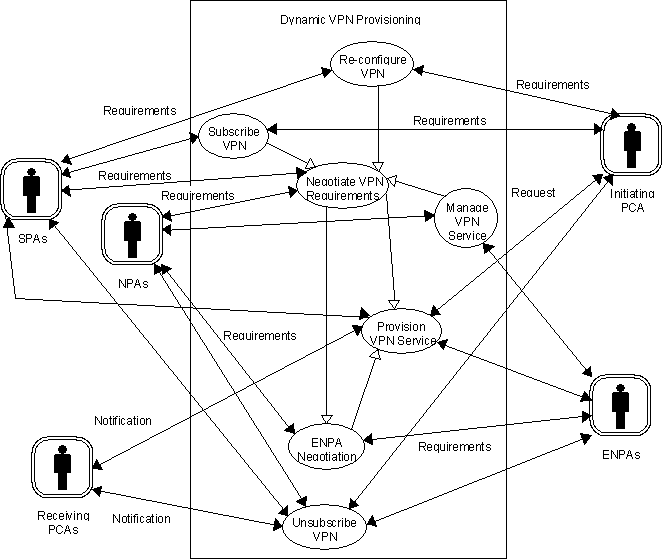
Figure 1 — Main Multimedia VPN Use Case Diagram
The Subscribe VPN scenario describes the service negotiation process between the Initiating PCA and the selected Service Provider Agents, for the purposes of commissioning the Dynamic VPN service. An overview of the interactions between the PCAs and the human users is described in Section 0.
The Negotiate VPN Requirements scenario describes the provisioning negotiation process between a single SPA and the selected NPAs in an attempt to achieve the requirements of the SPA. This scenario illustrates the process performed by the SPA during the negotiation process described in the Subscribe VPN Scenario.
The ENPA Negotiation Scenario describes the provisioning negotiation process between a NPA and selected ENPAs for elements of the network which the NPA itself cannot provision. This scenario illustrates the process which the NPAs in the Negotiate VPN Requirements scenario may perform.
The Provision VPN Service scenario describes configuring the connecting networks, and cancelling any abandoned network reservations that may have arisen during the provisioning negotiation process.
The Re-configure VPN scenario describes how either the Initiating PCA or the SPAs may dynamically re-configure the provisioned service.
The Manage VPN Service scenario describes the NPA’s ability to interact with non-agent systems like Operation and Maintenance (OAM), performance monitoring, statistics gathering, and billing. This scenario describes how the NPA maintains the provisioned network in a fault tolerant manner.
The Unsubscribe scenario describes the ‘tear down’ process for the VPN network on request of the Initiating PCA.
The final two subsections present generic scenarios, for authentication, and negotiation. Suggested protocols for negotiation are described in FIPA97 Part 2. The only explicit security policy described here is that of authentication, where every agent verifies that the other agents and agent platforms that it talks directly with are authentic before they interact.
In each of these scenarios, no direct reference is made to the interactions required with the agents defined in FIPA 97 Part 1 which form the LAP. It is envisaged that this improves the comprehension of the scenarios. FIPA 97 Part 1 should be used for guidance for how the agents illustrated in these scenarios register with the relevant agent platforms, and once registered locate each other prior to the domain interaction.
NOTE: The message interactions in this version of the document are described in English text format; however, FIPA ACL actions to achieve the required interactions are defined in Section 0. The ‘Subscribe VPN scenario’ description includes an example of how the required interactions could be achieved in ACL.
11.2 Subscribe VPN scenario
This scenario illustrates how the Initiating PCA negotiates with one or more SPAs aiming to establish a VPN service which best meets its requirements. For a description of the interactions performed by the Initiating PCA to establish the identity of suitable SPA agents, the reader is referred to FIPA 97 Part 1. The interactions required for the recruited SPAs to prepare a service proposal are described in a separate scenario as illustrated in Figure 3.
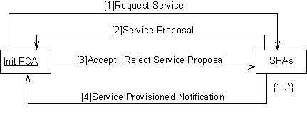
Figure 2 — Subscribe VPN Collaboration Diagram
Init. PCA sends Request Service message to one or more SPAs
Under delegated authority from the user, the Initiating PCA requests a VPN service to satisfy particular requirements from one or potentially many SPA agents. The chosen SPA agents may be selected either from a list maintained by the Initiating PCA itself of agents previously used, or by querying the DF as described in FIPA 97 Part 1. The form of the requested requirements are defined in the VPN Ontology, see Section 0 for details.
For example, this interaction could be composed in ACL as:
(cfp
:sender init_pca@iiop://fipa.org:60/init_pca
:receiver spa1@iiop://vpn.service.com:50/spa1
:content
((action spa1@iiop://vpn.service.com:50/spa1
(establish-vpn-service
:user-ids user1 user2 user3
:respond-by 1 hour)) true)
:ontology fipa-vpn-provisioning
:protocol fipa-iterated-contract-net
:language SL0)
SPAs sends Service Proposal messages to the Initiating PCA
The selected SPA agents respond with a proposal attempting to satisfy the requirements of the Initiating PCA agent. The definition of the attributes which may be included in the proposal are defined in the VPN Ontology, see Section 0 for details.
For example, this interaction could be composed in ACL as:
(propose
:sender spa1@iiop://vpn.service.com:50/spa1
:receiver init_pca@iiop://fipa.org:60/init_pca
:content
((action spa1@iiop://vpn.service.com:50/spa1
(establish-vpn-service
:user-ids user1 user2 user3
:respond-by 1 hour))
(establish-vpn-service
:user-ids user1 user2))
:reply-with service-offer-01
:ontology fipa-vpn-provisioning
:protocol fipa-iterated-contract-net
:language SL0)
Init. PCA sends Accept or Reject Service Proposal message to the SPAs
The Initiating PCA considers the suitability of the service proposals against its requirements and accepts or rejects each of the proposals as appropriate. It is expected that either one or none of the SPA agents will receive the accept notification, all others will be rejected.
For example, this interaction could be composed in ACL as:
(accept-proposal
:sender init_pca@iiop://fipa.org:60/init_pca
:receiver spa1@iiop://vpn.service.com:50/spa1
:content
((action spa1@iiop://vpn.service.com:50/spa1
(establish-vpn-service
:user-ids user1 user2 user3
:respond-by 1 hour)) true)
:reply-with service-acceptance-01
:in-reply-to service-offer-01
:ontology fipa-vpn-provisioning
:protocol fipa-iterated-contract-net
:language SL0)
It is envisaged that in situations where all of the SPA agents receive reject messages, the scenario will re-commence. In such situations the SPA agents used may be different, as may the service requirements (Init. PCA has sufficient intelligence to tailor the requirements depending on the run-time environment). Any changes made to the service requirements by the Initiating PCA agent will be in an attempt to improve its ability of achieving the user’s requirements.
SPA sends Service Provisioned Notification message to the Initiating PCA
In the situation where a SPA agent receives an accept service proposal message it is required to provision the service as promised. The interactions required to achieve this are described in a separate scenario as illustrated in Figure 3. After successfully provisioning the promised service the SPA agent sends the service provisioned notification message to the Initiating PCA agent.
For example, this interaction could be composed in ACL as:
(inform
:sender spa1@iiop://vpn.service.com:50/spa1
:receiver init_pca@iiop://fipa.org:60/init_pca
:content
((action spa1@iiop://vpn.service.com:50/spa1
(establish-vpn-service
:user-ids user1 user2
:respond-by 1 hour)) true)
:in-reply-to service-acceptance-01
:ontology fipa-vpn-provisioning
:protocol fipa-iterated-contract-net
:language SL0)
11.3 Negotiate VPN Requirements Scenario
This scenario illustrates how one of the selected SPA agents illustrated in Section 0 prepares the service proposal. The SPA negotiates with one or more NPAs aiming to establish a VPN service which best meets the requirements specified by the Initiating PCA. For a description of the interactions performed by the SPA to establish the identity of suitable NPA agents, the reader is referred to FIPA 97 Part 1. The interactions required for the recruited NPAs to prepare a service proposal by sub-contracting elements of the service to third-party network providers are described in a separate scenario as illustrated in Figure 3.
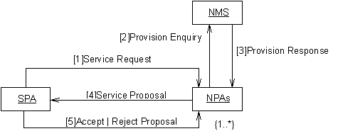
Figure 3 — Negotiate VPN Collaboration Diagram
SPA sends Service Request message to one or more NPAs
In an attempt to satisfy the service request from the Initiating PCA, the SPA sends the service request to one or potentially many NPAs. The chosen NPA agents may be selected either from a list maintained by the SPA itself of agents previously used, or by querying the DF as described in FIPA 97 Part 1. The form of the requested requirements are defined in the VPN Ontology, see Section 0 for details.
NPA sends Provision Enquiry message to the NMS wrapper
In an attempt to satisfy the VPN service requirements requested by the SPA agent, the NPA interacts with the actual NMS, via a wrapper agent (guidance for constructing such a wrapper agent is given in FIPA 97 Part 3) to enquire whether the required service can be achieved. The definition of the attributes which may be included in the provision enquiry are defined in the VPN Ontology, see Section 0 for details.
NMS sends Provision Response message to the NPA
The provision response message is sent to the NPA agent as a direct response to the VPN provision enquiry. This response would include details of the level of service that could be achieved currently by the NMS. The definition of the attributes which may be included in this response are defined in the VPN Ontology, see Section 0 for details.
In situations where the response indicates that it is not possible to achieve the required service, the NPA may choose to establish if third-party NPAs could provision particular elements of the service, such that the NPA can still offer a positive response to the service request. This is described in a separate scenario as illustrated in Figure 3.
NPAs send Service Proposal messages to the SPA
The selected NPA agents respond with a proposal attempting to satisfy the requirements of the SPA agent. The definition of the attributes which may be included in the proposal are defined in the VPN Ontology, see Section 0 for details.
SPA sends Accept or Reject Proposal message to the NPAs
The SPA considers the suitability of the service proposals against its requirements and accepts or rejects each of the proposals as appropriate. It is expected that either one or none of the NPA agents will receive the accept notification, all others will be rejected.
It is envisaged that situations where all of the NPA agents receive reject messages, that the scenario will re-commence. In such situations the NPA agents used may be different, as may the service requirements (SPA has sufficient intelligence to tailor the requirements depending on the run-time environment). Any changes made to the service requirements by the SPA agent will be in an attempt to improve its ability of achieving the Initiating PCA’s requirements.
11.4 ENPA Negotiation Scenario
This scenario illustrates how one of the selected NPA agents illustrated in Section 0 attempts to find third-party NPAs which can provision the elements of the service which the NPA itself cannot. The NPA negotiates with one or more ENPAs aiming to establish a VPN service which best meets the requirements specified by the SPA. For a description of the interactions performed by the NPA to establish the identity of suitable ENPA agents, the reader is referred to FIPA 97 Part 1.
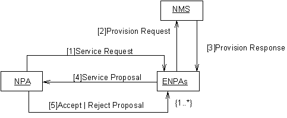
Figure 4 — ENPA Negotiation Collaboration Diagram
NPA sends Service Request message to one or more ENPAs
In an attempt to satisfy the service request from the SPA (the elements which it cannot itself provision), the NPA sends the service request to one or potentially many ENPAs. The chosen ENPA agents may be selected either from a list maintained by the NPA itself of agents previously used, or by querying the DF as described in FIPA 97 Part 1. The form of the requested requirements are defined in the VPN Ontology, see Section 0 for details.
ENPA sends Provision Enquiry message to the NMS wrapper
In an attempt to satisfy the VPN service requirements requested by the NPA agent, the ENPA interacts with the actual NMS, via a wrapper agent (guidance for constructing such a wrapper agent is given in FIPA 97 Part 3) to enquire whether the required service can be achieved. The definition of the attributes which may be included in the provision enquiry are defined in the VPN Ontology, see Section 0 for details.
NMS sends Provision Response message to the ENPA
The provision response message is sent to the ENPA agent as a direct response to the VPN provision enquiry. This response would include details of the level of service that could be achieved currently by the NMS. The definition of the attributes which may be included in this response are defined in the VPN Ontology, see Section 0 for details.
ENPAs send Service Proposal messages to the NPA
The selected ENPA agents respond with a proposal attempting to satisfy the requirements of the NPA agent. The definition of the attributes which may be included in the proposal are defined in the VPN Ontology, see Section 0 for details.
NPA sends Accept or Reject Proposal message to the ENPAs
The NPA considers the suitability of the service proposals against its requirements and accepts or rejects each of the proposals as appropriate. It is expected that either one or none of the ENPA agents will receive the accept notification, all others will be rejected.
It is envisaged that situations where all of the ENPA agents receive reject messages, that the scenario will re-commence. In such situations the ENPA agents used may be different, as may the service requirements (NPA has sufficient intelligence to tailor the requirements depending on the run-time environment). Any changes made to the service requirements by the NPA agent will be in an attempt to improve its ability of achieving the SPA’s requirements.
11.5 Provision VPN Service Scenario
This scenario illustrates how the accepted NPA illustrated in Section 0 actually provisions the promised service.
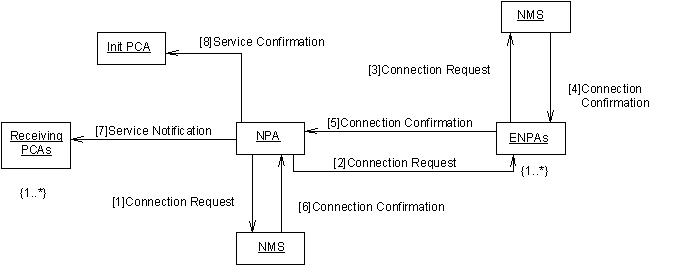
Figure 5 — Provision VPN Service Collaboration Diagram
NPA sends Connection Request message to it’s NMS wrapper agent
The selected NPA agent attempts to actually provision the VPN service requested by instructing the NMS to establish the VPN. The definition of the attributes which may be included in the connection request are defined in the VPN Ontology, see Section 0 for details.
NPA sends Connection Request message to ENPAs
For the situation where the selected NPA agent cannot itself provide the entire service it requests that the previously selected ENPAs attempt to actually provision the elements of the VPN service promised. The definition of the attributes which may be included in the connection request are defined in the VPN Ontology, see Section 0 for details.
ENPAs send Connection Request message to their NMS wrapper agents
The selected ENPA agents attempts to actually provision the elements of the VPN service promised by instructing their NMS to establish the required connections. The definition of the attributes which may be included in the connection request are defined in the VPN Ontology, see Section 0 for details.
NMS wrapper agent sends Connection Confirmation message to ENPA
The NMS wrapper agent responds to the connection request indicating that the promised elements have been successfully provisioned.
ENPAs send Connection Confirmation messages to NPA
The ENPA agent responds to connection request indicating that the promised elements have been successfully provisioned.
NMS wrapper agent sends Connection Confirmation message to NPA
The NMS wrapper agent responds to connection request indicating that the promised elements have been successfully provisioned.
NPA sends Service Notification message to the Receiving PCAs
The NPA agent indicates to the Receiving PCAs (as defined by Initiating PCA) that a VPN service has been established. The notification also indicates the details of the established service, such as the other parties involved, level of security. The definition of the attributes which may be included in the service notification are defined in the VPN Ontology, see Section 0 for details.
NPA sends Service Notification message to the Initiating PCA
The NPA agent indicates to the Initiating PCA that the VPN service has been established. The notification also indicates the details of the established service, such as the other parties involved, level of security. The definition of the attributes which may be included in the service notification are defined in the VPN Ontology, see Section 0 for details.
11.6 Re-Configure VPN Scenario
This scenario illustrates how the Initiating PCA negotiates with one or more SPAs aiming to alter the provisioned VPN service. For a description of the interactions performed by the Initiating PCA to establish the identity of suitable SPA agents, the reader is referred to FIPA 97 Part 1. The interactions required for the recruited SPAs to prepare a service proposal are described in a separate scenario as illustrated in Figure 3.
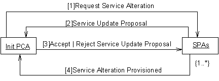
Figure 6 — Re-Configure VPN Collaboration Diagram
Init. PCA sends Request Service message to one or more SPAs
Under delegated authority from the user, the Initiating PCA requests a VPN service to satisfy particular requirements from one or potentially many SPA agents. The chosen SPA agents may be selected either from a list maintained by the Initiating PCA itself of agents previously used, or by querying the DF as described in FIPA 97 Part 1. The form of the requested requirements are defined in the VPN Ontology, see Section 0 for details.
SPAs sends Service Proposal messages to the Initiating PCA
The selected SPA agents respond with a proposal attempting to satisfy the requirements of the Initiating PCA agent. The definition of the attributes which may be included in the proposal are defined in the VPN Ontology, see Section 0 for details.
Init. PCA sends Accept or Reject Service Proposal message to the SPAs
The Initiating PCA considers the suitability of the service proposals against its requirements and accepts or rejects each of the proposals as appropriate. It is expected that either one or none of the SPA agents will receive the accept notification, all others will be rejected.
It is envisaged that situations where all of the SPA agents receive reject messages, that the scenario will re-commence. In such situations the SPA agents used may be different, as may the service requirements (Init. PCA has sufficient intelligence to tailor the requirements depending on the run-time environment). Any changes made to the service requirements by the initiating PCA agent will be in an attempt to improve its ability of achieving the user’s requirements.
SPA sends Service Provisioned Notification message to the Initiating PCA
In the situation where a SPA agent receives an accept service proposal message it is then required to actual provision the service as promised. The interactions required to achieve this are described in a separate scenario as illustrated in Figure 3. On successfully provisioning the promised service the SPA agent sends the service provisioned notification message to the Initiating PCA agent.
11.7 Manage VPN Service Scenario
This scenario illustrates how the NPA agent monitors and maintains the VPN service. The Manage VPN scenario should contain things like Operation and Maintenance (OAM), performance monitoring, statistics gathering, and billing. Only the operations have been identified at this time.
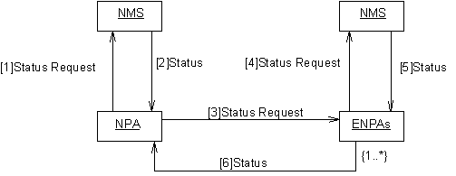
Figure 7 — Manage VPN Service Collaboration Diagram
The NPA requests a Network Management action from the NMS
During the lifetime of the dynamic VPN service the commissioned NPAs proactively monitor the status of the physical resources provisioned by requesting that the NMS_Wrapper agent performs the selected management operations. The details of the request are encoded in the FIPA-VPN-Management Ontology (currently undefined).
NMS sends Network Management Status message to the NPA
The NMS_Wrapper agent responds to the NPA with the result of performing the requested management operation. The result is encoded in the FIPA-VPN-Management Ontology (currently undefined).
The NPA request a Network Management action from the ENPAs
During the lifetime of the dynamic VPN service the commissioned NPAs proactively monitor the status of the physical resources provisioned by any third-party NPAs by requesting that the ENPA performs selected management operations. The details of the request are encoded in the FIPA-VPN-Management Ontology (currently undefined).
ENPA sends Request Network Management Message to the NMS
The ENPA interacts with the appropriate NMS_Wrapper agent in the same manner as the NPA as described above.
NMS sends Network Management Status message to the ENPA
The NMS_Wrapper agent interacts with the ENPA in the same manner as the NPA as described above.
ENPA sends Network Management Message to the NPA
The ENPA agent responds to the NPA with the result of performing the requested management operation. The result is encoded in the FIPA-VPN-Management Ontology (currently undefined).
11.8 Unsubscribe VPN Scenario
This scenario illustrates how the Initiating PCA requests that the established VPN service is terminated.
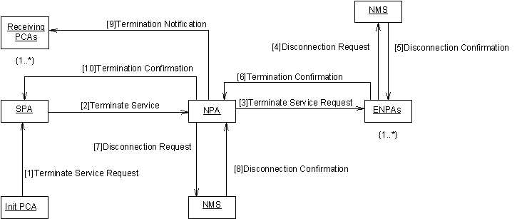
Figure 8 — Unsubscribe VPN Collaboration Diagram
The Initiating PCA sends a Terminate Service Request to the SPA.
A PCA is able to terminate the VPN service by requesting service termination by the SPA. The PCA who initiates the termination is called the Initiating PCA in this context.
The SPA sends a Terminate Service Request to one or more NPAs.
An SPA is able to terminate the service by requesting service termination by the NPA(s). This is done in response to the Terminate Service Request message received from the PCA.
The NPA sends a Terminate Service Request to one or more ENPAs.
The NPA is able to terminate the service by requesting service termination by the ENPA(s). This is done after the Terminate Service Request is received from an SPA.
The NPA sends a Disconnect Service Request to the NMS.
The NPA is able to disconnect the service by requesting that the required management operations are performed by the NMS. The management operations are encoded in the FIPA-VPN-Management Ontology (currently undefined). This is done in response to the Terminate Service Request message received from an SPA.
The ENPA sends a Disconnect Service Request to the NMS.
The ENPA is able to disconnect the service by requesting that the required management operations are performed by the NMS. The management operations are encoded in the FIPA-VPN-Management Ontology (currently undefined). This is done in response to the Terminate Service Request message received from an NPA.
The NMS sends a Disconnect Confirmation to the ENPA.
The NMS_Wrapper agent responds to the ENPA with the result of performing the requested management operation. The result is encoded in the FIPA-VPN-Management Ontology (currently undefined).
The NMS sends a Disconnect Confirmation to the NPA.
The NMS_Wrapper agent responds to the NPA with the result of performing the requested management operation. The result is encoded in the FIPA-VPN-Management Ontology (currently undefined).
The NPA sends Termination Notification to one or more receiving SPAs.
The NPA notifies the SPA when the service is terminated. This is done after the Disconnect Confirmation is received from the NMS and after the Termination Confirmation is received from the ENPA(s).
The SPA sends a Termination Notification to one or more receiving PCAs.
The SPA notifies the PCA when the service is terminated. This is done after the Termination Confirmation is received from the NPA(s).
11.9 Generic negotiation Scenario
Authentication will be required of all agents and agent platforms. The authenticate action as described in FIPA97 Part 1 provides a mechanism where by an agent’s identity can be verified. This scenario illustrates the required interactions for an arbitrary A to authenticate the arbitrary Agent B
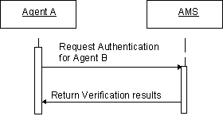
Figure 9 — Generic Authentication Interaction Diagram
11.10 Generic negotiation Scenario’s
Negotiation strategies (relating to agent goals) are internal to agents, and are not subject to standardisation in this document.
For illustration purposes, an example of a basic contract net protocol and suggested extensions are presented below; refer to part 2 of the FIPA 97 standard, ‘Agent Communication Language’, for guidance on protocols for negotiation.
11.10.1 Basic contract net protocol
The basic contract net protocol is used between PCA and SPA and between SPA and NPA agents as illustrated in Figure 12. In the first case that is not really the contract net because the request-proposal is not multi-casted. The general idea is to make a call for proposal, and then to select one proposal. When an agent makes a proposal, it commits to achieve its proposal if it is accepted.
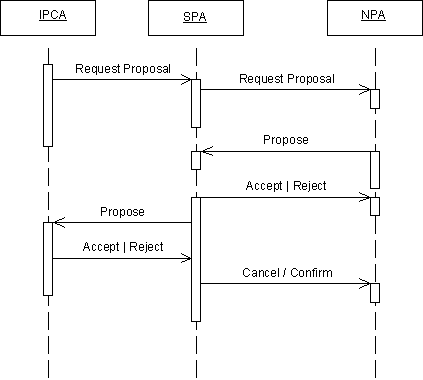
Figure 10 — Basic Contract net protocol Interaction Diagram
Another version of this protocol could be designed. In this one, the SPA can make a proposal to the PCA before consulting the NPAs by using its knowledge of previous experiences. In this protocol the confirm/cancel request is sent to the IPCA by the SPA at the end of the scenario (after the reception and selection of all NPA’s resources). Refer to FIPA97 Part 2 for further details.
11.10.2 Iterated contract net protocol
This protocol is an extension of the basic contract net protocol. It includes a negotiation phase where the agents make counter proposals to find an agreement. At the present time we consider only the negotiation between PCA and SPA. Refer to FIPA97 Part 2 for further details.
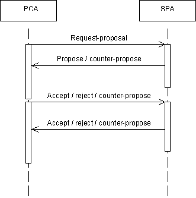
Figure 11 — Suggested Contract net Interaction Diagram
Protocols for SPA«NPA and NPA«ENPA negotiation will be implemented in a similar way.
Example values to negotiate over are:
· Time/date/duration - The time, date and duration of the proposed service. This will be dependent on participating user’s availability and preferences but will in turn be influenced by existing commitments of the network resources.
· Quality of Service (QoS) - This will reflect the user’s requirements for the parameters of the VPN application, but will also be influenced by the availability of physical resources. It is reasonable to assume that in most cases, a higher QoS will incur a higher cost.
· Security - The method and level of encryption used to secure the data being transferred during the service. Different Service Providers may be able to offer different methods or levels of encryption.
· Cost - The cost to the Service Provider of buying the desired service from the Network Provider. This will be dependent on the above parameters.
· Response Time - The time by which the requesting SPA expects a response from the recruited NPAs that a suitable service has been identified (and/or provisioned). The shorter the response time, the less scope there is for interaction between agents within the system. It is reasonable to assume that the longer the response time specified, the more suitable service the SPA will be able to identify/provision.
11.11 Overview of the User Interaction
It is envisaged that there would be three distinct phases of interaction between the user and his/her PCA. These (and only these) interactions are described here and illustrated in Figure 12.
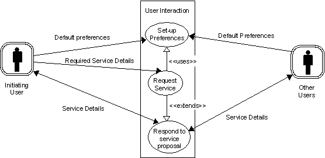
Figure 12 — User/PCA Interaction Overview Use Case Diagram
11.11.1 Setting Preferences
Before using the system for the first time, the user would configure or “prime” his PCA with his preferences for certain parameters (e.g. preferred applications, payment details etc.). The user’s PCA would use these as default values when setting up services unless specifically instructed otherwise by the user. This information forms the basic knowledge which a PCA can use when it is approached by other PCAs.
11.11.2 Request Service
When requesting a VPN service to be established between specific participants, the user would detail his PCA with information specific to that service (e.g. time, date, duration, security requirements etc.). He may choose to override his default preferences for example to select a higher QoS for a service with important customers.
11.11.3 Respond to Proposed Service
By this stage, the PCAs representing the users have carried out initial negotiations and information sharing (e.g. security requirements) and composed a proposal for the service which is hopefully acceptable to all participants. The PCAs present this proposal to all participants for their approval. Each participating user can then take one of three actions: accept the service proposal as described, reject the service proposal or modify the service proposal.
By accepting the proposal, the user indicates that he is satisfied for the service to go ahead as detailed. Choosing to reject the proposal will terminate any future involvement of the user in the service (for example, it may no longer be relevant for him to attend)[2]. If the user still wants to participate, but is not altogether satisfied with the details (maybe the proposed service clashes with an appointment that he has not stored in his diary), he can modify the service details, his diary or preferences appropriately and thus instruct his PCA to re-negotiate the service details.
The PCAs will agree alternative details (see scenario ‘Commission VPN’) and subsequently present these to the participants for their response. This process will continue until all involved participants accept the proposal or there are less than two participants still interested in attending the service.
12
High Level Information Model
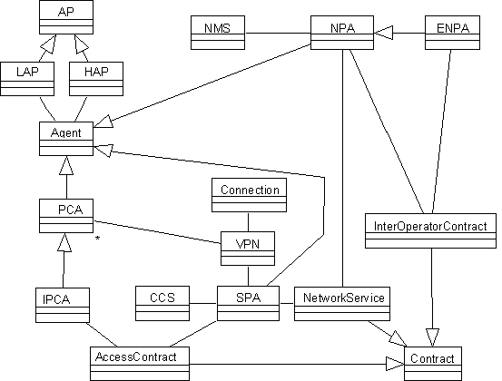
Figure 13 — VPN Class Overview
Figure 16 shows a simple class overview (no attributes or methods have been defined) which shows the relationships between the main objects in the system, these fall into five main categories:
a) Agents: these are the prime entities of the system. Agents communicate and co-ordinate to achieve shared plans. In the Multimedia VPN scenario agents negotiate over the services to be delivered. To make this concrete agents negotiate over the terms and conditions of contracts for service delivery. There are five main agents represented in the information model:
1) Personal Communication Agent (PCA) - this is the general class of Personal Communication Agent which serves individual users.
2) Initiating Personal Communication Agent (IPCA) - this is the Personal Communication Agent which initiates the Dynamic VPN request.
3) Service Provider Agent (SPA) - this is the agent which provides the Dynamic VPN service to the IPCA.
4) Network Provider Agent (NPA) - this is the agent which provides the network resources to realise the service.
5) External Network Provider Agent (ENPA) - this is the agent which provides third-party network resources to realise the service.
b) Agent Platforms (AP) - these are the physical platforms where agents reside. There are two types:
1) Home Agent Platform (HAP) - this is the default home of agent (where it was first created).
2) Local Agent Platform (LAP) - this is the local platform on which an agent resides currently.
c) Contracts: these are the informational items which the agents negotiate over. Negotiation in this context means agreeing to the set of attributes contained in the contract. There are three main contract types:
1) AccessContract - this is the contract between the IPCA and the SPA.
2) NetworkService - this is the contract between the SPA and the NPA.
3) InterOperatorContract - this is the contract between the NPA and the ENPA.
d) Software Systems - these are the various software systems which are under direct control of their respective agents. There are two:
1) Customer Care System (CCS) - this is controlled by the SPA to initiate customer functions.
2) Network Management System (NMS) - this is controlled by the NPA to reserve and manage network resources.
e) Connection - this is the class of service-level resources which are reserved by the NPA on behalf of the SPA in order to provide the Dynamic VPN service.
13 FIPA VPN Provisioning Ontology
13.1 VPN Provisioning Grammar
This VPN Provisioning content syntax and grammar should be read as an extension to the Agent Communication Language syntax defined in Part 2 of FIPA97.
The management content language is as follows:
VPN Provisioning Actions
VPNAction =
“ (“ “ setup-comm-service” FIPA-VPN-service-description “ )”
| “ (“ “ get-additional-requirements” FIPA-VPN-service-description “ )”
| “ (“ “ establish-vpn-service” FIPA-VPN-service-description “ )”
| “ (“ “ update-vpn-service” FIPA-VPN-service-description “ )”
| “ (“ “ terminate-vpn-service” FIPA-VPN-service-description “ )”
| “ (“ “ setup-vpn-service” FIPA-VPN-service-description “ )”
| “ (“ “ establish-network-connection-service” FIPA-VPN-connection-description “ )”
| “ (“ “ update-network-comm-service” FIPA-VPN-connection-description “ )”
| “ (“ “ terminate-network-comm-service” FIPA-VPN-connection-description “ )”
| “ (“ “ setup-vpn-links” FIPA-VPN-connection-description “ )”
| “ (“ “ roll-back-network-service” FIPA-VPN-connection-description “ )”
| “ (“ “ update-connection-service” FIPA-VPN-connection-description “ )”
| “ (“ “ terminate-network-service” FIPA-VPN-connection-description “ )”
VPN Provisioning Object Descriptions
FIPA-VPN-service-description =
“ (“ “ :service-type” FIPA-VPN-Service-type-desc “ )”
| “ (“ “ (“ “ :user-id” FIPA-VPN-User-id+ “ )”
| “ (“ “ :qos” FIPA-VPN-QOS-desc “ )”
| “ (“ “ :security-level” FIPA-VPN-Security-desc “ )”
| “ (“ “ :service-id” FIPA-VPN-Service-desc “ )”
| “ (“ “ :respond-by” FIPA-VPN-Response-time “ )”
FIPA-VPN-connection-service-description =
“ (“ “:connection-id” FIPA-VPN-connection-id “ )”
| “ (“ “:qos” FIPA-VPN-QOS-desc “ )”
| “ (“ “:contract-id” FIPA-VPN-contract-id “ )”
| “ (“ “:service-type” FIPA-VPN-Service-type-desc “ )”
| “ (“ “:security-level” FIPA-VPN-Security-desc “ )”
FIPA-VPN-service-type-desc =
“ (“ “:video” FIPA-VPN-video-descriptor “ )”
| “ (“ “:voice” FIPA-VPN-voice-descriptor “ )”
| “ (“ “:data” FIPA-VPN-data-descriptor “ )”
| “ (“ “:videoconference” FIPA-VPN-videoconference-descriptor “ )”
FIPA-VPN-video-descriptor =
“ (“ “:video-stream-id” FIPA-VPN-video-stream-id “ )”
| “ (“ “:video-type” FIPA-VPN-video-type “ )”
| “ (“ “:video-security” FIPA-VPN-video-security “ )”
FIPA-VPN-voice-descriptor =
“ (“ “:voice-stream-id” FIPA-VPN-voice-stream-id “ )”
| “ (“ “:voice-type” FIPA-VPN-voice-type “ )”
| “ (“ “:voice-security” FIPA-VPN-voice-security “ )”
FIPA-VPN-data-descriptor =
“ (“ “:data-stream-id” FIPA-VPN-data-stream-id “ )”
| “ (“ “:data-type” FIPA-VPN-data-type “ )”
| “ (“ “:data-security” FIPA-VPN-data-security “ )”
FIPA-VPN- videoconference -descriptor =
“ (“ “:videoconf-stream-id” FIPA-VPN-videoconf-stream-id “ )”
| “ (“ “:videoconf-type” FIPA-VPN-videoconf-type “ )”
| “ (“ “:videoconf-security” FIPA-VPN-videoconf-security “ )”
FIPA-VPN-video-stream-id =
See ATM forum M4 specification for example
FIPA-VPN-video-type =
See ATM forum M4 specification for example
FIPA-VPN-video-security =
See ATM forum M4 specification for example
FIPA-VPN-voice-stream-id =
See ATM forum M4 specification for example
FIPA-VPN-voice-type =
See ATM forum M4 specification for example
FIPA-VPN-voice-security =
See ATM forum M4 specification for example
FIPA-VPN-data-stream-id =
See ATM forum M4 specification for example
FIPA-VPN-data-type =
See ATM forum M4 specification for example
FIPA-VPN-data-security =
See ATM forum M4 specification for example
FIPA-VPN-User-id =
See ATM forum M4 specification for example
FIPA-VPN-QOS-desc =
See ATM forum M4 specification for example
FIPA-VPN-Security-desc =
See ATM forum M4 specification for example
FIPA-VPN-Response-time =
See ATM forum M4 specification for example
FIPA-VPN-connection-id =
See ATM forum M4 specification for example
FIPA-VPN-contract-id =
See ATM forum M4 specification for example
FIPA-VPN-videoconf-stream-id =
See ATM forum M4 specification for example
FIPA-VPN-videoconf-type =
See ATM forum M4 specification for example
FIPA-VPN-videoconf-security =
See ATM forum M4 specification for example
VPN Provisioning Exception Propositions
FIPA-VPN-Exception =
“ (“ “ unrecognised-attribute-value” FIPA-VPN-service-description “ )”
| “(“ “ unrecognised-attribute-value” FIPA-VPN-connection-service-description “)”
| “ (“ “ unrecognised-attribute-value” FIPA-VPN-service-type-desc “ )”
| “ (“ “ unrecognised-attribute” FIPA-VPN-service-description “ )”
| “ (“ “ unrecognised-attribute” FIPA-VPN-connection-service-description “ )”
| “ (“ “ unrecognised-attribute” FIPA-VPN-service-type-desc “ )”
| “ (“ “ unauthorised” “ )”
| “ (“ “ unwilling-to-perform” “ )”
| “ (“ “ inconsistency” “ )”
| “ (“ “ pca-unavailable” “ )”
| “ (“ “ spa-unavailable” “ )”
| “ (“ “ pca-overloaded” “ )”
| “ (“ “ spa-overloaded” “ )”
| “ (“ “ npa-overloaded” “ )”
| “ (“ “ unsatisfactory” “ )”
| “ (“ “ nms-wrapper-overloaded” “ )”
[For lexical rules see FIPA97 part 2]
13.2 Network Management and Provisioning Actions
13.2.1 setup-comm-service
|
Supported by |
PCA |
|
|
Description |
The PCA receives a request to set up a communication service to support requirements for a conference from a user. |
|
|
Content |
fipa-vpn-service-description |
|
|
FIPA Protocol |
fipa-request |
|
|
Example |
(request :sender ui_wrapper@iiop://fipa.org:60/ui :receiver pca@iiop://fipa.org:60/pca :content (action pca@iiop://fipa.org:60/pca setup-comm-service (:service-type video :user-ids id-1 id-2 id-3 :respond-by 1-hour)) :protocol fipa-request :ontology fipa-vpn-provisioning :language SL0) |
|
|
Refuse Reasons |
unrecognised-attribute-value |
This error occurs when an invalid syntax is detected in one of the attribute values. |
|
|
unrecognised-attribute |
This error occurs when one of the attribute ids in the message does not belong to the PCA object. |
|
|
unauthorised |
This error occurs if the requesting agent is not sufficiently authorised. |
|
|
unwilling-to-perform |
This error occurs if the PCA is refusing to perform the action. |
|
Failure Reasons |
pca-overloaded |
This occurs because the PCA fails to finish the operation because of processing resource overload. |
13.2.2 get-additional-requirements
|
Supported by |
UI-WRAPPER |
|
|
Description |
The PCA asks for additional information about the request from the user. |
|
|
Content |
fipa-vpn-service-description |
|
|
FIPA Protocol |
fipa-request |
|
|
Example |
(request :sender pca@iiop://fipa.org:60/pca :receiver ui_wrapper@iiop://fipa.org:60/ui :content (action ui_wrapper@iiop://fipa.org:60/ui (get-additional requirements :qos # :security-level #)) :protocol fipa-request :ontology fipa-vpn-provisioning :language SL0) |
|
|
Reply |
The query above requests information about the additional requirements of agent pca@iiop://fipa.org:60/pca regarding QoS and security level. The reply would be a result, for example: (inform :sender ui_wrapper@iiop://fipa.org:60/ui :receiver pca@iiop://fipa.org:60/pca :content (result ui_wrapper@iiop://fipa.org:60/ui (:qos 80) (:security-level 9)) :protocol fipa-request :ontology fipa-vpn-provisioning :language SL0) |
|
|
Refuse Reasons |
unrecognised-attribute-value |
This error occurs when an invalid syntax is detected in the agent name or signature. |
|
|
unrecognised-attribute |
This error occurs when attribute ids that appear in the message are invalid. |
|
|
unauthorised |
This error occurs if the requesting agent is not sufficiently authorised. |
|
|
unwilling-to-perform |
This error occurs if the UI-WRAPPER is too busy or overloaded with other operations. |
|
Failure Reasons |
ui-wrapper-unavailable |
The UI-WRAPPER failed to complete the action due to internal resource problems. |
13.2.3 cfps to spas
|
Supported by |
SPA |
|
|
Description |
A PCA asks for proposals for achieving the required service from the SPAs. |
|
|
Content |
fipa-vpn-service-description |
|
|
FIPA Protocol |
fipa-iterated-contract-net |
|
|
Example |
(cfp :sender init_pca@iiop://fipa.org:60/init_pca :receiver spa1@iiop://vpn.service.com:50/spa1 :content ((action spa1@iiop://vpn.service.com:50/spa1 (establish-vpn-service :user-ids user1 user2 user3 :respond-by 1 hour)) true) :ontology fipa-vpn-provisioning :protocol fipa-iterated-contract-net :language SL0) |
|
|
Refuse Reasons |
unrecognised-attribute-value |
This error occurs when an invalid syntax is detected in the agent name or signature. |
|
|
unrecognised-attribute |
This error occurs when attribute ids that appear in the message are invalid. |
|
|
unauthorised |
This error occurs if the requesting agent is not sufficiently authorised. |
|
|
unwilling-to-perform |
This error occurs if the SPA is too busy or overloaded with other operations. |
|
|
unsatisfactory |
The SPA was not satisfied with the proposal so it was rejected. |
|
Failure Reasons
|
spa-unavailable |
The SPA failed to complete the action due to internal resource problems. |
13.2.4 establish-vpn-service
|
Supported by |
SPA |
|
|
Description |
After receiving service availability from the SPA, the PCA requests that the SPA establishes the VPN service. |
|
|
Content |
fipa-vpn-service-description |
|
|
FIPA Protocol |
fipa-request |
|
|
Example |
(request :sender pca@iiop://fipa.org:60/pca :receiver spa@iiop://fipa.org:60/spa :content (action spa@iiop://fipa.org:60/spa (establish-service :service-id #)) :protocol fipa-request :ontology fipa-vpn-provisioning :language SL0) |
|
|
Refuse Reasons |
unrecognised-attribute-value |
This error occurs when an invalid syntax is detected in the agent name or signature. |
|
|
unrecognised-attribute |
This error occurs when attribute ids that appear in the message are invalid. |
|
|
unauthorised |
This error occurs if the requesting agent is not sufficiently authorised. |
|
|
unwilling-to-perform |
This error occurs if the PCA is too busy or overloaded with other operations. |
|
Failure Reasons |
spa-unavailable |
The PCA failed to complete the action due to internal resource problems. |
13.2.5 update-vpn-service
|
Supported by |
PCA |
|
|
Description |
A PCA updates VPN service to accommodate changing user requirements. |
|
|
Content |
fipa-vpn-service-description |
|
|
FIPA Protocol |
fipa-request |
|
|
Example |
(request :sender ui_wrapper@iiop://fipa.org:60/ui :receiver pca@iiop://fipa.org:60/pca :content (action pca@iiop://fipa.org:60/pca (update-VPN-service :service-id # :new-user-id # :list-of-requirements #)) :protocol fipa-request :ontology fipa-vpn-provisioning :language SL0) |
|
|
Refuse Reasons |
unrecognised-attribute-value |
This error occurs when an invalid syntax is detected in one of the attribute values. |
|
|
unrecognised-attribute |
This error occurs when one of the attribute ids in the message does not belong to the PCA object. |
|
|
unauthorised |
This occurs if the requesting agent is not sufficiently aurthorised. |
|
|
unwiling-to-perform |
This error occurs if the PCA is too busy or overloaded with other operations. |
|
Failure Reasons |
pca-overloaded |
This occurs because the PCA fails to finish the update operation because of processing resource overload. |
|
|
inconsistency |
The PCA rejected the update because it failed to keep the consistency of the PCA’s knowledge. |
13.2.6 terminate-vpn-service
|
Supported by |
SPA |
|
|
Description |
A PCA requests the termination of the VPN service. |
|
|
Content |
fipa-vpn-service-description |
|
|
FIPA Protocol |
fipa-request |
|
|
Example |
(request :sender pca@iiop://fipa.org:60/pca :receiver spa@iiop://fipa.org:60/spa :content (action spa@iiop://fipa.org:60/spa (terminate-VPN-service :service-id #)) :protocol fipa-request :ontology fipa-vpn-provisioning :language SL0) |
|
|
Refuse Reasons |
unrecognised-attribute-value |
This error occurs when an invalid syntax is declared in one of the attribute values. |
|
|
unauthorised |
This error occurs if the requesting agent is not sufficiently authorised. |
|
|
unwiling-to-perform |
This error occurs if the SPA is too busy or overloaded with other operations. |
|
Failure Reasons
|
spa-overloaded |
This error occurs because the SPA fails to finish the operation because of processing resource overload. |
NOTE After establishing a VPN service, the SPA should send messages to receiving PCAs to notify their respective users using the INFORM communicative act.
13.2.7 setup-vpn-service
|
Supported by |
SPA |
|
|
Description |
An SPA processes request to set up the VPN service. The SPA creates and returns a service-id to the PCA. |
|
|
Content |
fipa-vpn-service-description |
|
|
FIPA Protocol |
fipa-request |
|
|
Example |
(request :sender pca@iiop://fipa.org:60/pca :receiver spa@iiop://fipa.org:60/spa :content (action spa@iiop://fipa.org:60/spa (setup-VPN-service :service-type video :user-ids id-1 id-2 id-3 :respond-by 1-hour :delay # :security-level # :list-additional-requirements #)) :protocol fipa-request :ontology fipa-vpn-provisioning :language SL0) |
|
|
Refuse Reasons |
unrecognised-attribute-value |
This error occurs when an invalid syntax is detected in one of the attribute values. |
|
|
unrecognised-attribute |
This error occurs when one of the attribute ids in the message does not belong to the SPA object. |
|
|
unauthorised |
This error occurs if the requesting agent is not sufficiently authorised. |
|
|
unwilling-to-perform |
This error occurs if the SPA is refusing to perform the action. |
|
Failure Reasons
|
spa-overloaded |
This failure occurs because the SPA fails to finish the operation because of processing resource overload. |
13.2.8 cfps-to-npas
|
Supported by |
NPA |
|
|
Description |
An SPA sends a request for proposals to achieve the required service to the NPAs. |
|
|
Content |
fipa-vpn-connection-service-description |
|
|
FIPA Protocol |
fipa-iterated-contract-net |
|
|
Example |
(cfp :sender spa1@iiop://vpn.service.com:50/spa1 :receiver npa1@iiop://vpn.provider.com:50/npa1 :content ((action npa1@iiop://vpn.provider.com:50/npa1 (establish-network-connection-service :connection-id con1)) true) :ontology fipa-vpn-provisioning :protocol fipa-iterated-contract-net :language SL0)
|
|
|
Refuse Reasons |
unrecognised-attribute-value |
This error occurs when an invalid syntax is detected in the agent name or signature. |
|
|
unrecognised-attribute |
This error occurs when attribute ids that appear in the message are invalid. |
|
|
unauthorised |
This error occurs if the requesting agent is not sufficiently authorised. |
|
|
unwilling-to-perform |
This error occurs if the NPA is too busy or overloaded with other operations. |
|
|
unsatisfactory |
The NPA was not satisfied with the proposal so it was rejected. |
|
Failure Reasons
|
npa-unavailable |
The NPA failed to complete the action due to internal resource problems. |
13.2.9 establish-network-connection-service
|
Supported by |
NPA |
|
|
Description |
After receiving connection service availability from the NPA, the SPA makes a request for the NPA to establish the network connection service. |
|
|
Content |
fipa-vpn-connection-service-description |
|
|
FIPA Protocol |
fipa-request |
|
|
Example |
(request :sender spa@iiop://fipa.org:60/spa :receiver npa@iiop://fipa.org:60/npa :content (action npa@iiop://fipa.org:60/npa (establish-network-connection-service :connection-id #)) :protocol fipa-request :ontology fipa-vpn-provisioning :language SL0) |
|
|
Refuse Reasons |
unrecognised-attribute-value |
This error occurs when an invalid syntax is detected in the agent name or signature. |
|
|
unrecognised-attribute |
This error occurs when attribute ids that appear in the message are invalid. |
|
|
unauthorised |
This error occurs if the requesting agent is not sufficiently authorised. |
|
|
unwilling-to-perform |
This error occurs if the NPA is too busy or overloaded with other operations. |
|
Failure Reasons |
npa-unavailable |
The NPA failed to complete the action due to internal resource problems. |
13.2.10 update-network-comm-service
|
Supported by |
NPA |
|
|
Description |
The SPA requests that the NPA updates the network communication service to accommodate changing connection service requirements. |
|
|
Content |
fipa-vpn-connection-service-description |
|
|
FIPA Protocol |
fipa-request |
|
|
Example |
(request :sender spa@iiop://fipa.org:60/spa :receiver npa@iiop://fipa.org:60/npa :content (action npa@iiop://fipa.org:60/npa (update-network-comm-service :connection-id # :list-of-requirements #)) :protocol fipa-request :ontology fipa-vpn-provisioning :language SL0) |
|
|
Refuse Reasons |
unrecognised-attribute-value |
This error occurs when an invalid syntax is detected in one of the attribute values. |
|
|
unrecognised-attribute |
This error occurs when one of the attribute ids in the message does not belong to the NPA object. |
|
|
unauthorised |
This occurs if the requesting agent is not sufficiently aurthorised. |
|
|
unwiling-to-perform |
This error occurs if the NPA is too busy or overloaded with other operations. |
|
Failure Reasons |
npa-overloaded |
This failure occurs because the NPA fails to finish the update operation because of processing resource overload. |
|
|
inconsistency |
The NPA rejected the update because it failed to keep the consistency of the NPA’s knowledge. |
13.2.11 terminate-network-comm-service
|
Supported by |
NPA |
|
|
Description |
The SPA requests that the NPA terminates the network communication service. |
|
|
Content |
fipa-vpn-connection-service-description |
|
|
FIPA Protocol |
fipa-request |
|
|
Example |
(request :sender spa@iiop://fipa.org:60/spa :receiver npa@iiop://fipa.org:60/npa :content (action npa@iiop://fipa.org:60/npa (terminate-network-comm-service :connection-id #)) :protocol fipa-request :ontology fipa-vpn-provisioning :language SL0) |
|
|
Refuse Reasons |
unrecognised-attribute-value |
This error occurs when an invalid syntax is declared in one of the attribute values. |
|
|
unauthorised |
This error occurs if the requesting agent is not sufficiently authorised. |
|
|
unwiling-to-perform |
This error occurs if the NPA is too busy or overloaded with other operations. |
|
Failure Reasons
|
npa-overloaded |
This error occurs because the NPA fails to finish the operation because of processing resource overload. |
13.2.12 setup–vpn-links
|
Supported by |
NMS-WRAPPER |
|
|
Description |
The NPA requests a Network Management System to set up the required VPN connection. |
|
|
Content |
fipa-vpn-connection-service-description |
|
|
FIPA Protocol |
fipa-request |
|
|
Example |
(request :sender npa@iiop://fipa.org:60/npa :receiver nms_wrapper@iiop://fipa.org:60/nms_wrapper :content (action nms_wrapper@iiop://fipa.org:60/nms_wrapper (setup-VPN-links :security-level # :list-additional-requirements #)) :protocol fipa-request :ontology fipa-vpn-provisioning :language SL0) |
|
|
Refuse Reasons |
unrecognised-attribute-value |
This error occurs when an invalid syntax is detected in one of the attribute values. |
|
|
unrecognised-attribute |
This error occurs when one of the attribute ids in the message does not belong to the NMS-WRAPPER object. |
|
|
unauthorised |
This error occurs if the requesting agent is not sufficiently authorised. |
|
|
unwilling-to-perform |
This error occurs if the NMS-WRAPPER is refusing to perform the action. |
|
Failure Reasons |
nms-wrapper-overloaded |
This failure occurs because the NMS-WRAPPER fails to finish the operation because of processing resource overload. |
13.2.13 roll-back-network-service
|
Supported by |
NMS-WRAPPER |
|
|
Description |
The NPA requests that the NMS-WRAPPER rolls back the network service in response to a request from the SPA. |
|
|
Content |
fipa-vpn-connection-service-description |
|
|
FIPA Protocol |
fipa-request |
|
|
Example |
(request :sender npa@iiop://fipa.org:60/npa :receiver nms_wrapper@iiop://fipa.org:60/nms_wrapper :content (action nms_wrapper@iiop://fipa.org:60/nms_wrapper (roll-back-network-service :contract-id #)) :protocol fipa-request :ontology fipa-vpn-provisioning :language SL0) |
|
|
Refuse Reasons |
unrecognised-attribute-value |
This error occurs when an invalid syntax is detected in one of the attribute values. |
|
|
unrecognised-attribute |
This error occurs when one of the attribute ids in the message does not belong to the NMS-WRAPPER object. |
|
|
unauthorised |
This occurs if the requesting agent is not sufficiently aurthorised. |
|
|
unwiling-to-perform |
This error occurs if the NMS-WRAPPER is too busy or overloaded with other operations. |
|
Failure Reasons |
nms-wrapper-overloaded |
This occurs because the NMS-WRAPPER fails to finish the update operation because of processing resource overload. |
|
|
inconsistency |
The NMS-WRAPPER rejected the update because it failed to keep the consistency of the NMS-WRAPPER’s knowledge. |
13.2.14 update-connection-service
|
Supported by |
NMS-WRAPPER |
|
|
Description |
The SPA requests that the NMS-WRAPPER updates the network communication links service to accommodate changing Connection service requirements. |
|
|
Content |
fipa-vpn-connection-service-description |
|
|
FIPA Protocol |
fipa-request |
|
|
Example |
(request :sender npa@iiop://fipa.org:60/npa :receiver nms_wrapper@iiop://fipa.org:60/nms_wrapper :content (action nms_wrapper@iiop://fipa.org:60/nms_wrapper (update-connection-service :contract-id #)) :protocol fipa-request :ontology fipa-vpn-provisioning :language SL0) |
|
|
Refuse Reasons |
unrecognised-attribute-value |
This error occurs when an invalid syntax is detected in one of the attribute values. |
|
|
unrecognised-attribute |
This error occurs when one of the attribute ids in the message does not belong to the NMS-WRAPPER object. |
|
|
unauthorised |
This occurs if the requesting agent is not sufficiently aurthorised. |
|
|
unwiling-to-perform |
This error occurs if the NMS-WRAPPER is too busy or overloaded with other operations. |
|
Failure Reasons |
nms-wrapper-overloaded |
This failure occurs because the nms-wrapper fails to finish the update operation because of processing resource overload. |
|
|
inconsistency |
The NMS-WRAPPER rejected the update because it failed to keep the consistency of the NMS-WRAPPER’s knowledge. |
13.2.15 terminate-connection-service
|
Supported by |
NMS-WRAPPER |
|
|
Description |
The NPA requests that the NMS-WRAPPER terminates the network communication service. |
|
|
Content |
fipa-vpn-connection-service-description |
|
|
FIPA Protocol |
fipa-request |
|
|
Example |
(request :sender npa@iiop://fipa.org:60/npa :receiver nms_wrapper@iiop://fipa.org:60/nms_wrapper :content (action nms_wrapper@iiop://fipa.org:60/nms_wrapper terminate-connection-service (:contract-id #)) :protocol fipa-request :ontology fipa-vpn-provisioning :language SL0) |
|
|
Refuse Reasons |
unrecognised-attribute-value |
This error occurs when an invalid syntax is declared in one of the attribute values. |
|
|
unauthorised |
This error occurs if the requesting agent is not sufficiently authorised. |
|
|
unwiling-to-perform |
This error occurs if the NMS-WRAPPER is too busy or overloaded with other operations. |
|
Failure Reasons
|
nms-wrapper-overloaded |
This failure occurs because the NMS-WRAPPER fails to finish the operation because of processing resource overload. |
13.3 VPN Provisioning Objects
This section defines mandatory and optional parameters associated with the content of VPN provision actions. All descriptions are extensible, in that additional parameters can be defined and used by agent developers. Specifically, the implementer is free to define the italicised parameters of the contents for each agent.
13.3.1 fipa-vpn-service-description
|
Parameter |
Description |
|
:service-id |
Identifies a globally unique service identifier generated by the Service Provider Agent (SPA). |
|
:qos |
Identifies the Quality of Service for the type of network, e.g., Constant Bit Rate (CBR) traffic for voice ATM network. |
|
:service-type |
Denotes the service(s) the agent can provide. This would include a description of the characteristics of the service description as well as the service description itself, e.g., video. |
|
:user-ids |
Denotes lists of globally unique user identifiers for the required participants of the VPN service. |
|
:security-level |
Denotes the level of security that the user is allowed. |
|
:respond-by |
Denotes a time interval or event(s) when a response to a request is desired. |
13.3.2 fipa-vpn-connection-service-description
|
Parameter |
Description |
|
:connection-id |
Identifies a globally unique connection identifier generated by the Network Provider Agent (NPA). |
|
:qos |
Identifies the Quality of Service for the type of network, e.g., Constant Bit Rate (CBR) traffic for voice ATM network. |
|
:service-type |
Denotes the service(s) the agent can provide. This would include a description of the characteristics of the service description as well as the service description itself, e.g., video. |
|
:security-level |
Denotes the level of security that the SPA is allowed. |
|
:contract-id |
Identifies the contract for the provisioning of the connections. |
|
:respond-by |
Denotes a time interval or event(s) when a response to a request is desired. |
13.3.3 fipa-vpn-video-descriptor
|
Parameter |
Description |
|
:video-stream-id |
Identifies a globally unique video stream identifier generated by the Network Provider Agent (NPA). More than one simultaneous video stream may exist during a single connection. |
|
:video-type |
Identifies which of a number of predefined video formats is used in this stream. Each format defines its resolution, colour depth, frame rate, etc. |
|
:video-security |
Identifies which of a number of predefined encryption techniques is used to encrypt this video stream. |
13.3.4 fipa-vpn-voice-descriptor
|
Parameter |
Description |
|
:voice-stream-id |
Identifies a globally unique voice stream identifier generated by the Network Provider Agent (NPA). More than one simultaneous voice stream may exist during a single connection. |
|
:voice-type |
Identifies which of a number of predefined voice formats is used in this stream. Each format defines its sampling rate, channel information, etc. |
|
:voice-security |
Identifies which of a number of predefined encryption techniques is used to encrypt this voice stream. |
13.3.5 fipa-vpn-data-descriptor
|
Parameter |
Description |
|
:data-stream-id |
Identifies a globally unique data stream identifier generated by the Network Provider Agent (NPA). More than one simultaneous data stream may exist during a single connection. |
|
:data-type |
Identifies whether ASCII or binary data is being transmitted |
|
:data-security |
Identifies which of a number of predefined encryption techniques is used to encrypt this data stream. |
13.3.6 fipa-vpn-videoconference-descriptor
|
Parameter |
Description |
|
:video-conf-stream-id |
Identifies a globally unique video conference stream identifier generated by the Network Provider Agent (NPA). More than one simultaneous video conference stream may exist during a single connection. |
|
:video-conf-type |
Identifies which of a number of predefined video-conferencing formats is used in this stream. Each format defines its resolution, colour depth, frame rate, audio format, etc. |
|
:video-conf-security |
Identifies which of a number of predefined encryption techniques is used to encrypt this video conference stream. |